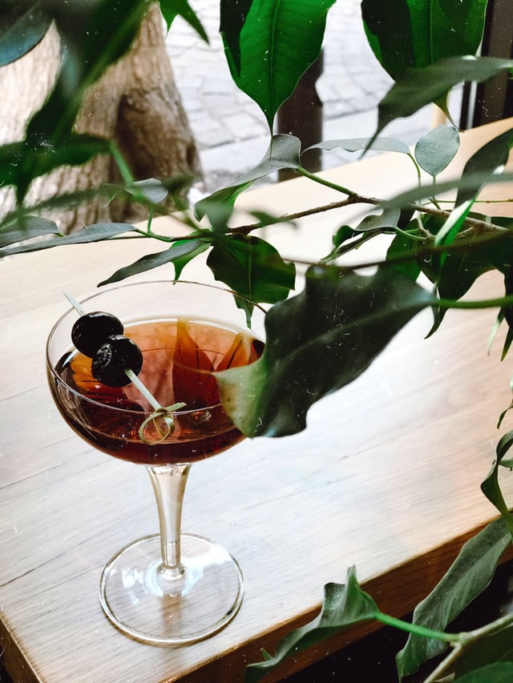

Manhattan

Photo by Emily Andreeva on Unsplash
The Manhattan is a classic cocktail dating back to the 1800's. One of the five cocktails named for a New York City borough. This time-tested cocktail consists of only three simple ingredients, rye whisky, vermouth, and bitters.
Ingredients
- 2 oz or 60 ml of Rye Wisky
- 1 oz 60 ml of Sweet vermouth
- 2 Dashes of Bitters
Directions
- Grab a mixing glass and add some ice.
- Measure and pour 2 oz of rye whisky into the mixing glass
- Add 1 oz of sweet vermouth
- Next add 2 dashes of bitters
- Stir the drink
- Strain the drink into a cocktail glass
- optional garish: maraschino cherry on a cocktail pick
Home